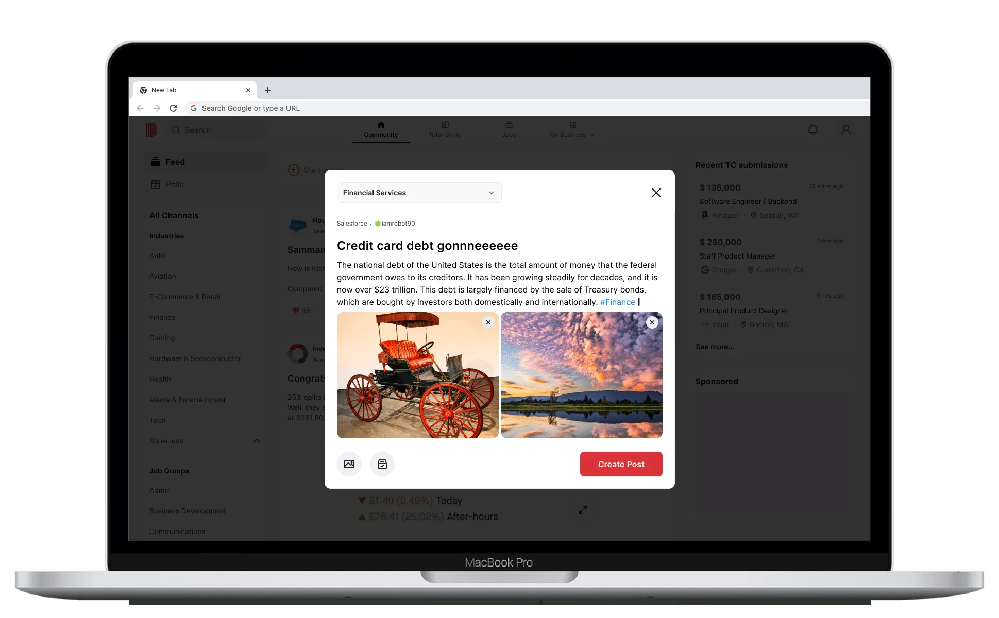
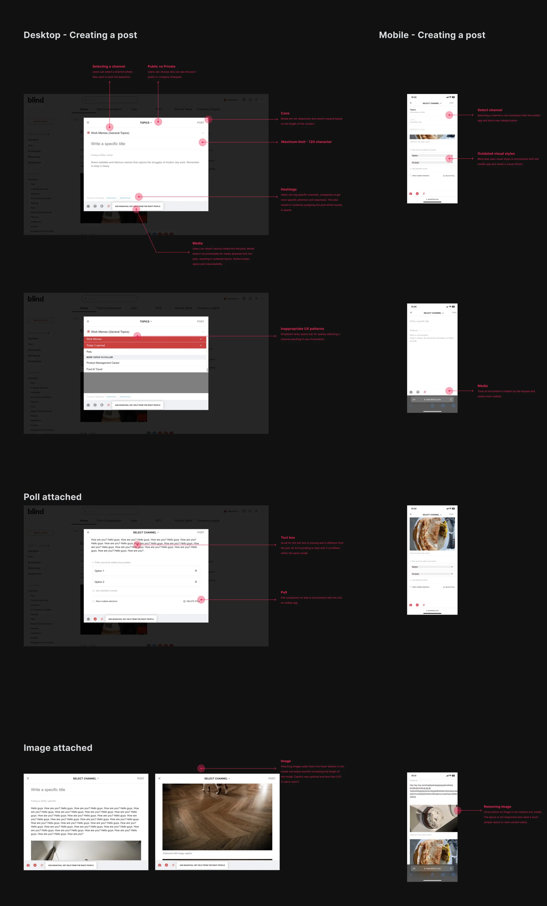
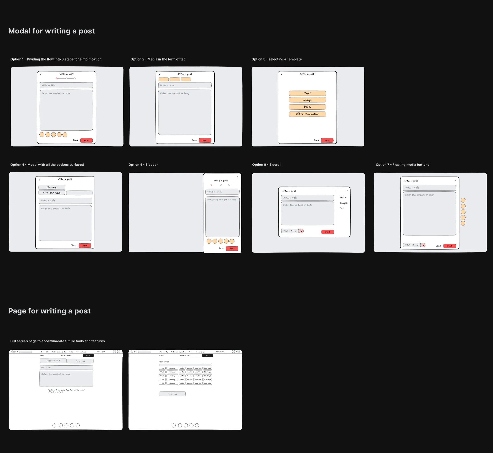
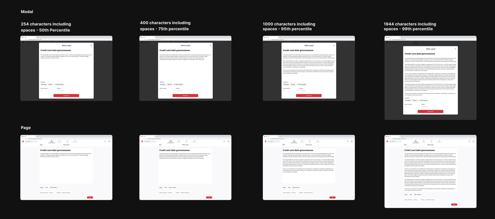
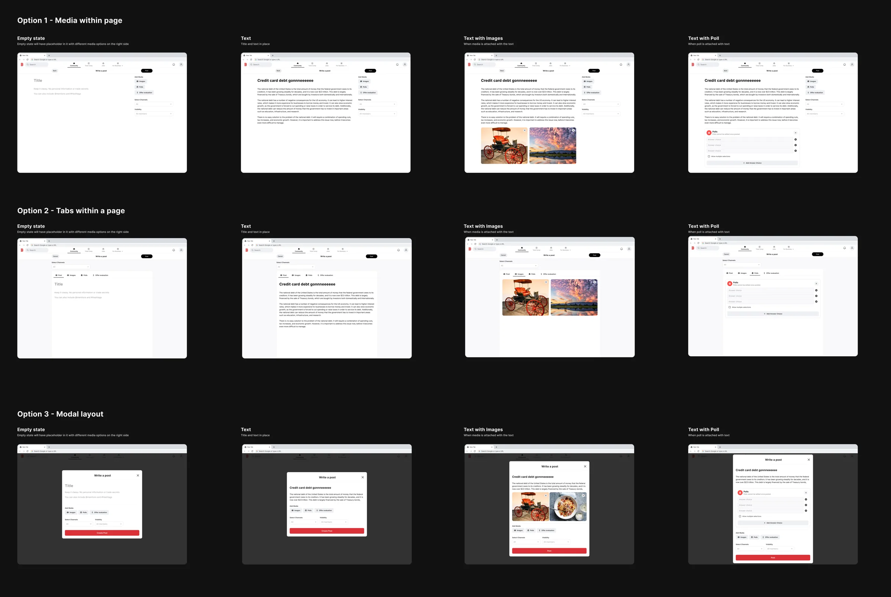
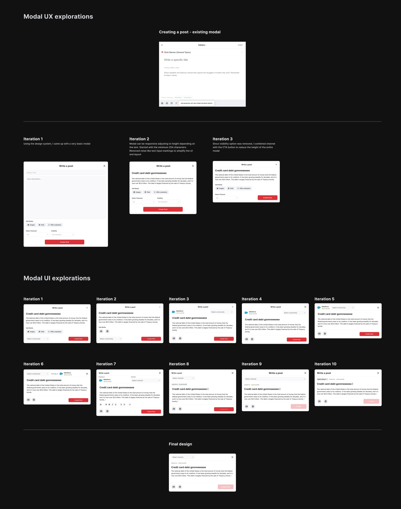
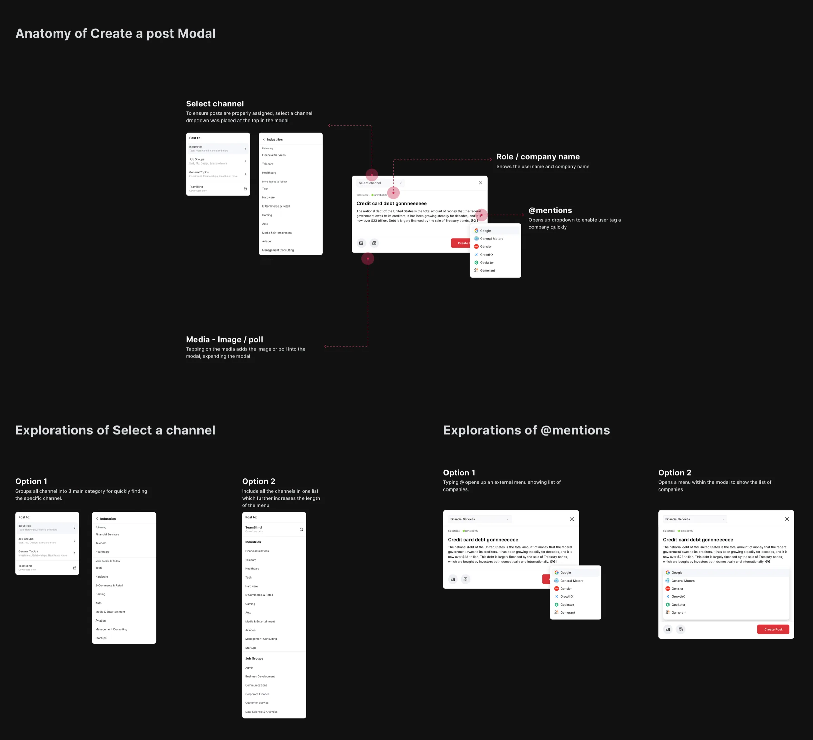
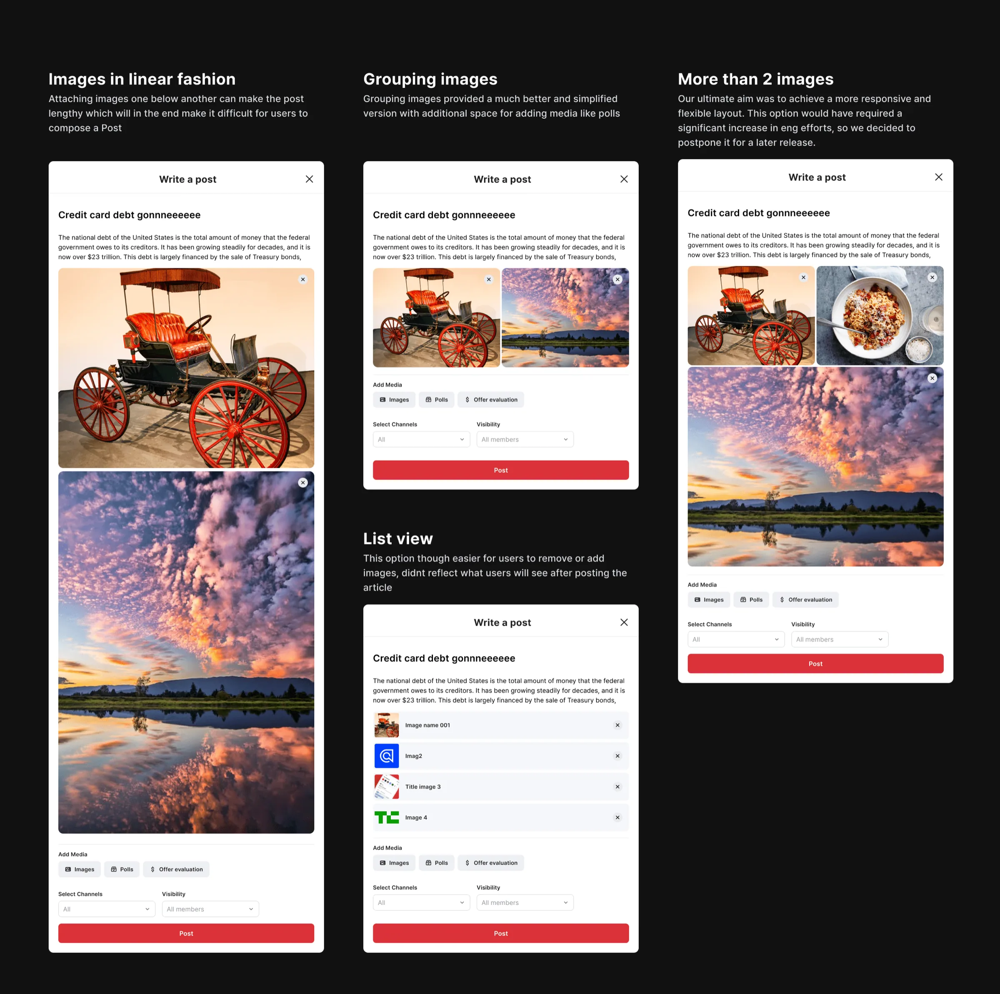

02
Create a post
Simplifying the post creation process to boost community engagement.

Problem
Blind users create around 50k monthly posts, with 12% on desktop, for advice, insights, job opportunities, company culture, and feedback in a secure, anonymous environment. However, a recent 23% decline in web post creation and improper tagging diminish user satisfaction. Outdated UX/UI patterns add to user frustration. To remedy this, we redesigned the 'write a post' process to boost community engagement and interactions on Blind.

Layout exploratons
I conducted an analysis of several social platforms, studying their 'write a post' user flows. After establishing benchmarks, I began developing initial layout concepts using Excalidraw

Page vs Modal
There was an argument regarding the best pattern for creating a post, whether to use a dedicated page or a modal.
The page approach was considered more straightforward from an engineering perspective, and it allowed for easier integration of additional tools in the future. Engineers also believed it would result in fewer bugs when implemented for mobile web. In order to save time, management were more aligned with the page approach.
However, I advocated for the modal approach since page layout is not the appropriate UX. Modals provide a compact layout for quick post creation without navigating users to a separate page. Modals also offer the advantage of allowing users to swiftly return to their previous location in the user flow, maintaining their context. They are responsive and adaptable to various screen sizes.
To support this argument and advocate for the users, I collaborated with a data analyst to gather relevant data and conducted competitive analysis to present some of the common patterns adopted by popular social platforms.
83%
Post created consist of only text
7%
Posts include atleast 1 image in it
75%
Post includes max 406 characters
I designed quick mock-ups to assess the space required for displaying 406 characters on both a dedicated page and a modal interface. Our observations revealed that even for a 254-character post, a full page layout was not optimal. It not only distracted users with the visible top navigation but also made it cumbersome to navigate back to the main feed. In contrast, the modal offered flexibility, responsiveness, and a more user-friendly experience. Based on this data, we confidently chose the modal approach.

I tested various media attachment layouts within the 'create a post' feature to assess feasibility and user experience, aiding the team's decision-making process regarding the choice between modal and page designs. To conclude we decided to go with modal due to several adavantages it provides over a page.

Diving deeper - Modal explorations
I revisited the design canvas and explored multiple modal layout options, focusing on simplicity, efficiency, and user-friendliness by exploring various UX / UI styles.

Anatomy of Modal
With finalizing the modal layout, I started focusing on the user experience of each of the different use cases starting with selecting a channel, attaching media, @ mentions. etc.

Attaching Media - Images
After exploring various options for displaying media attachments in the modal, and following discussions with the design team, we adopted the 'What You See Is What You Get' (WYSIWYG) principle, allowing users to preview their content before posting, making the process more user-friendly.

Final prototype - Desktop
After addressing all the details, I created a quick prototype to help engineers better understand the user flow. The feature is still in development and requires much more work on micro interactions